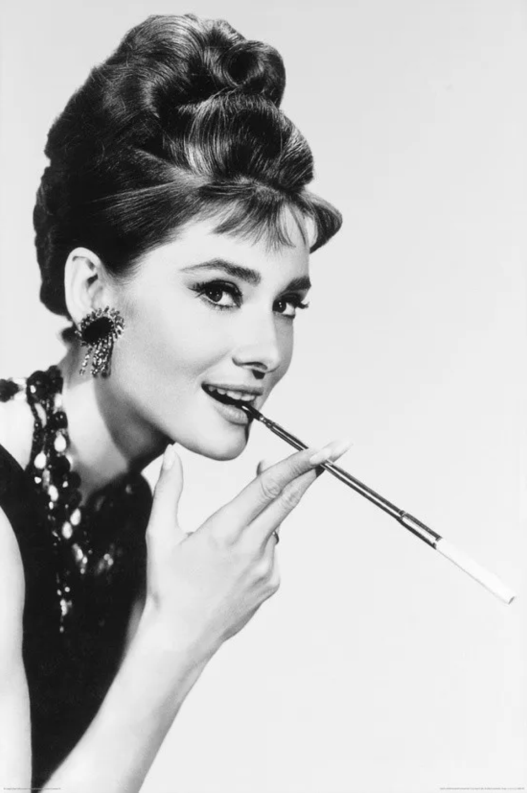

1929
Audrey hepburn

Audrey Hepburn's beauty secrets
- Her signature eye make-up
- She knew the power of a strong brow
- Staying hydrated was key
- Her secret to combatting dry skin
- She had the same dermatologist as Marilyn